kg-demo después del ensayo de la guía de la plataforma, y qué mostrar.1. El mapa: qué reemplaza a qué y dónde está en los diagramas
En la arquitectura (página 2) el sistema habla con cuatro sistemas externos: el Ministerio de Comercio, el servidor de correo certificado, las redes sociales y los sistemas que consumen nuestro servicio SOAP. En el equipo, los tres primeros los reemplazan contenedores que responden con el mismo contrato, y el cuarto es nuestro propio endpoint. Además están las piezas de apoyo de la página 3a (almacén de objetos, Elasticsearch, Kafka, Redis, PostgreSQL y Eureka). Los números son los de la guía de los diagramas.
| En el equipo | Qué es en la arquitectura | Dónde está (guía 1) | Quién lo usa | Cómo se abre |
|---|---|---|---|---|
Mailpit · correo | Servidor de correo certificado (SMTP/TLS) | p. 2 · n.º 9; p. 3a · n.º 18; p. 5 · n.º 13 | ms-notificaciones: CorreoSmtpAdapter envuelto por los decoradores | Navegador: localhost:8025 |
WireMock · ministerio | Ministerio de Comercio, servicio web SOAP de precios | p. 2 · n.º 8; p. 3a · n.º 17 | ms-integracion: MinisterioComercioAdapter y MinisterioSoapClient, detrás de PrecioReferenciaCacheProxy | kg exec ministerio curl … |
WireMock · redes | Redes sociales, API de tendencias (HTTPS/REST) | p. 2 · n.º 10; p. 3a · n.º 19 | ms-analitica: TendenciasJob con RedesSocialesAdapter | kg exec redes curl … |
| Nuestro servicio SOAP | Lo consumen otros sistemas (no se reemplaza) | p. 2 · n.º 11; p. 3a · n.º 16 | ms-integracion: AbastecimientoSoapEndpoint (Apache CXF), por el gateway | curl localhost:8080/api/integracion/abastecimiento?wsdl con token |
SeaweedFS · s3 | Almacén de objetos S3 | p. 3a · n.º 11; p. 5 · n.º 18 | Escriben ms-cotizaciones, ms-ordenes y ms-menu; lee ms-notificaciones para adjuntar | PDF en V14 y V23 · kgs3 s3 ls |
| Elasticsearch | Logs de error (ELK) | p. 3a · n.º 8; p. 5 · n.º 12 | Escriben los once (AppenderElasticsearch); lee ms-administracion (ElasticsearchLogsAdapter) | Ventana «Logs de errores» · kg exec elasticsearch curl … |
| Kafka | Broker de eventos | p. 3a · n.º 15 | Los otros diez publican por la outbox (ms-administracion no publica); consumen siete | kg exec kafka /opt/kafka/bin/… |
| Redis | Caché, canal de alarmas y límite de tasa | p. 3a · n.º 13; p. 5 · n.º 17 | ms-integracion, ms-notificaciones y el gateway | kg exec redis redis-cli … |
| PostgreSQL | Una base por servicio | p. 5 · n.º 16 | Cada servicio, solo la suya | kg exec postgres psql … |
Eureka y /plataforma/ | Service Registry | p. 3a · n.º 7; p. 5 · n.º 8 | El gateway y los once servicios | Navegador: localhost:8761 y localhost:8080/plataforma/ |
Imágenes de los contenedores: correo axllent/mailpit:v1.24, ministerio wiremock/wiremock:3.13.1, redes wiremock/wiremock:3.13.1, s3 chrislusf/seaweedfs:3.97, elasticsearch docker.elastic.co/elasticsearch/elasticsearch:8.19.4, kafka apache/kafka:3.9.1, redis redis:7.4.12-alpine, postgres postgres:17.12-alpine.
Página 2 · el contexto
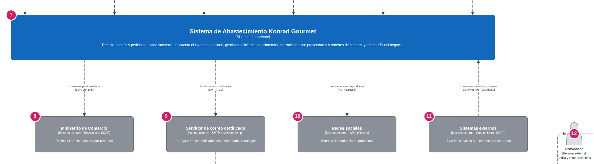
| N.º | Qué es y qué lo hace en el equipo |
|---|---|
Sistema de Abastecimiento Konrad Gourmet. Todo lo que corre en kg-demo: la SPA, el gateway, Eureka y los once servicios con sus datos. | |
Ministerio de Comercio. El contenedor ministerio (WireMock) responde el servicio web SOAP con el mismo WSDL. Solo lo llama ms-integracion. | |
Servidor de correo certificado. El contenedor correo (Mailpit) recibe por SMTP lo que envía ms-notificaciones y lo muestra en localhost:8025. | |
Redes sociales. El contenedor redes (WireMock) responde la API de tendencias con token. Solo la llama ms-analitica. | |
Sistemas externos. No se reemplaza: nuestro servicio SOAP corre de verdad en ms-integracion y se alcanza por el gateway en localhost:8080/api/integracion/abastecimiento, con token. | |
Proveedor. Es la dirección de correo del proveedor: su correo llega a la bandeja de Mailpit (ventas@proveedorabc.com). |
Página 3a · los contenedores
La página completa: los números que interesan aquí están a los dos lados (los sistemas externos) y abajo (Kafka, Redis y el almacén). Toca un número de la tabla para ir a él. Los demás números de la imagen son los de la guía de los diagramas y se explican allí.
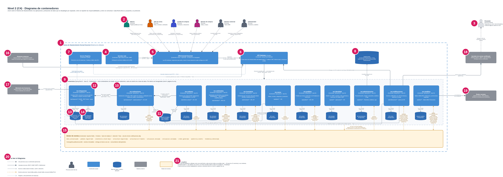
| N.º | Qué es y qué lo hace en el equipo |
|---|---|
Service Registry (Eureka). Eureka, publicado en localhost:8761 (sección 12). | |
Logs de error (Elasticsearch). Elasticsearch, solo dentro de la red: la ventana «Logs de errores» o kg exec elasticsearch curl (sección 8). | |
Almacén de objetos [S3]. SeaweedFS, solo dentro de la red: el PDF de V14 y V23 o kgs3 s3 ls (sección 7). | |
| ms-integracion. La frontera: el único que habla SOAP hacia afuera y hacia adentro. | |
Redis. Redis, solo dentro de la red: kg exec redis redis-cli (sección 10). | |
Broker de eventos (Kafka). Kafka, solo dentro de la red: kg exec kafka … (sección 9). | |
Sistemas externos. Se prueba con curl contra el WSDL por el gateway (sección 6). | |
Ministerio de Comercio. WireMock ministerio (sección 4). | |
| Servidor de correo certificado. Mailpit (sección 3). | |
Redes sociales. WireMock redes (sección 5). |
Página 5 · el despliegue
Solo se explican los números de lo que está fuera de la plataforma; los demás son los de la guía de los diagramas y se explican allí.
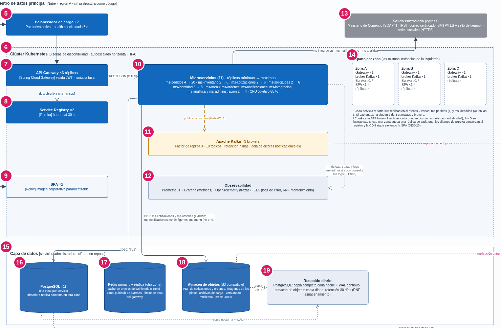
| N.º | Qué es y qué lo hace en el equipo |
|---|---|
Service Registry ×2. Una sola instancia de Eureka en localhost:8761. | |
Observabilidad. De la observabilidad, en el equipo está Elasticsearch con el índice logs-errores. | |
Salida controlada. Por aquí salen las llamadas al Ministerio, al correo y a las redes: en el equipo van a los contenedores ministerio, correo y redes. | |
| PostgreSQL ×11. Un PostgreSQL con once bases separadas, una por servicio (sección 11). | |
| Redis primario + réplica. Un Redis con la caché de precios, el canal de alarmas y el límite de tasa. | |
Almacén de objetos. SeaweedFS con los buckets documentos-pdf e imagenes-platos. |
2. Cómo se abre lo que no se publica
El compose solo publica tres puertos en el equipo; todo lo demás vive dentro de la red de Docker y no se le cambia nada para la sustentación (DEC-113).
| Puerto | Qué es |
|---|---|
localhost:8025 | Mailpit |
localhost:8761 | Eureka |
localhost:8080 | la aplicación (Nginx) y, por el gateway, nuestro SOAP |
Para lo que no se publica hay dos caminos:
- Las ventanas de la aplicación, que ya lo usan: el PDF de V14 y de V23 sale del almacén de objetos; «Logs de errores» lee Elasticsearch; la diferencia frente al precio estándar de V18 y V19 viene del Ministerio; la traza de envíos de V14 dice si el correo salió.
- La terminal, con
docker compose execy la herramienta que ya trae cada contenedor (curlen WireMock y Elasticsearch,redis-cli,psql, los scripts de Kafka) y, para el almacén,docker compose rundel contenedor que crea los buckets, que traeawsy las credenciales.
Antes de entrar, en una terminal abierta en FinalProyecto/, se pegan estos dos atajos (duran lo que dure
la terminal):
kg() { COMPOSE_PROJECT_NAME=kg-demo docker compose -f KonradGourmet/plataforma/docker-compose.yml "$@"; }
kgs3() { kg run --rm --no-deps --entrypoint aws s3-bucket --endpoint-url http://s3:8333 "$@"; }
Todos los comandos de esta guía se corrieron así en kg-demo después del ensayo de la guía de la
plataforma, y lo que se ve debajo de cada uno es lo que respondieron. Las horas y los identificadores cambian en cada
ensayo; los números de la historia (SOL-034, COT-023, COT-024, OC-0013) no.
3. Mailpit · el servidor de correo certificado
- Reemplaza a
- El servidor de correo certificado (SMTP/TLS): p. 2 · n.º 9; p. 3a · n.º 18.
- Quién lo usa
- Solo ms-notificaciones, que escucha seis tópicos y manda un correo por cada evento. El remitente es
Konrad Gourmet <notificaciones@konradgourmet.com>. - Cómo se abre
http://localhost:8025en el navegador: la bandeja, cada correo con sus pestañas Text, Headers y Raw, y los adjuntos.- Patrones
- DecoratorFactory Method (CreadorCorreo)Claim checkEventosHexagonal
Qué correos llegan y de qué evento sale cada uno
Después del ensayo de la guía de la plataforma la bandeja tiene estos 7 correos, del más reciente al más antiguo:
| N.º | Asunto | Para | Evento (tópico) | Adjunto |
|---|---|---|---|---|
| 1 | Orden de compra OC-0013 | ventas@proveedorabc.com | orden.generada | OC-0013.pdf |
| 2 | Solicitud de cotización COT-024 | ventas@proveedorc.com | cotizacion.enviada | COT-024.pdf |
| 3 | Solicitud SOL-034 en trámite | carlos.mendoza@konradgourmet.com | solicitud.en-tramite | — |
| 4 | Solicitud de cotización COT-023 | ventas@proveedorabc.com | cotizacion.enviada | COT-023.pdf |
| 5 | Solicitud SOL-034 registrada | carlos.mendoza@konradgourmet.com | solicitud.registrada | — |
| 6 | Stock bajo: Res | carlos.mendoza@konradgourmet.com | inventario.stock-bajo | — |
| 7 | Promociones sugeridas | carlos.mendoza@konradgourmet.com | tendencia.detectada | — |

| N.º | Correo |
|---|---|
| «Orden de compra OC-0013» → ventas@proveedorabc.com · con PDF adjunto. orden.generada: la orden con su PDF, al proveedor | |
| «Solicitud de cotización COT-024» → ventas@proveedorc.com · con PDF adjunto. cotizacion.enviada: la cotización con su PDF, al proveedor | |
| «Solicitud SOL-034 en trámite» → carlos.mendoza@konradgourmet.com. solicitud.en-tramite: aviso al jefe de cocina | |
| «Solicitud de cotización COT-023» → ventas@proveedorabc.com · con PDF adjunto. cotizacion.enviada: la cotización con su PDF, al proveedor | |
| «Solicitud SOL-034 registrada» → carlos.mendoza@konradgourmet.com. solicitud.registrada: confirmación al jefe de cocina | |
| «Stock bajo: Res» → carlos.mendoza@konradgourmet.com. inventario.stock-bajo: la alerta al jefe de cocina | |
| «Promociones sugeridas» → carlos.mendoza@konradgourmet.com. tendencia.detectada: las promociones de la semana (llega al encender la plataforma) |
El certificado y el sello de tiempo: la cadena de decoradores
X-CertificadoX-Sello-TiempoLos decoradores se arman en ConfiguracionNotificaciones:
new CorreoCertificadoDecorator(new EstampaCronologicaDecorator(smtp)). Cada uno agrega su cabecera y pasa el
mensaje al siguiente; el adaptador SMTP no sabe que existen. Agregar otra garantía (por ejemplo, una firma) es agregar
otro decorador.
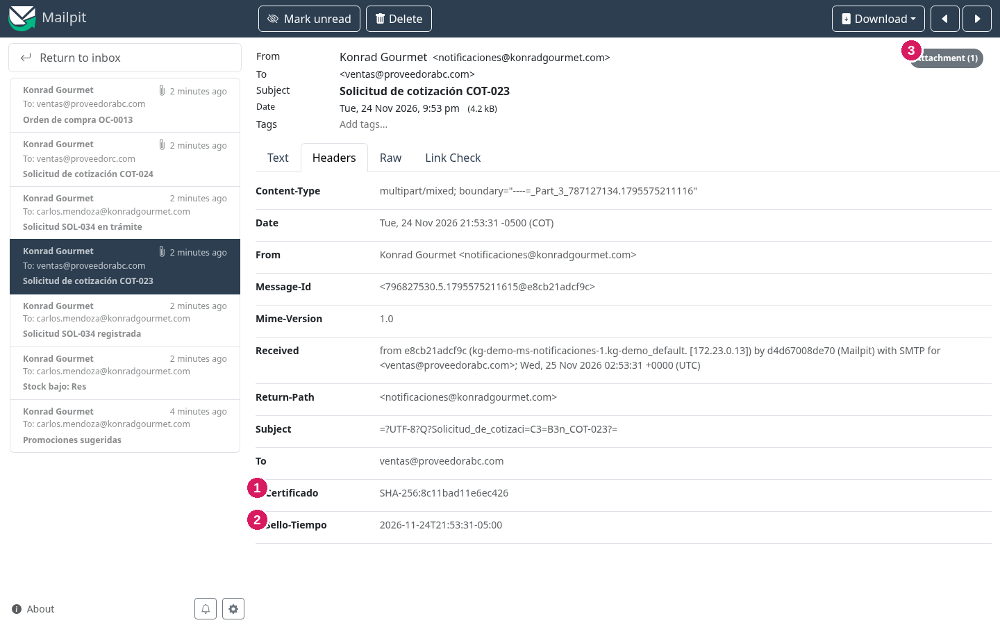
| N.º | Qué señalar |
|---|---|
X-Certificado: SHA-256:8c11bad11e6ec426: los primeros 8 bytes (16 caracteres) de la huella SHA-256 del destinatario y el cuerpo. Si alguien cambia el texto o el destinatario, la huella ya no coincide. | |
X-Sello-Tiempo: 2026-11-24T21:53:31-05:00: la fecha y hora de Bogotá en que salió, con su zona horaria. | |
| El adjunto COT-023.pdf: el PDF que ms-cotizaciones guardó en el almacén; el evento solo llevaba su dirección. |
La huella se puede comprobar en vivo con el destinatario y el cuerpo del correo (pestaña Text):
8c11bad11e6ec426
Da lo mismo que la cabecera X-Certificado.
El correo de la orden y su PDF
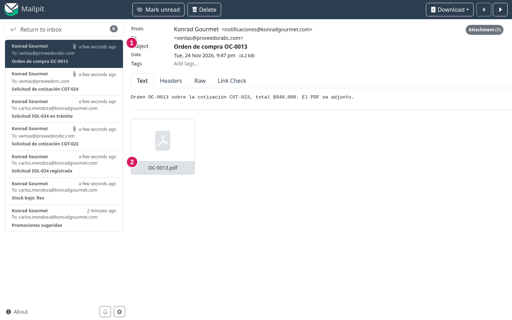
| N.º | Qué señalar |
|---|---|
| El asunto, con OC-0013. | |
| El adjunto OC-0013.pdf. |

El cuerpo del correo de la orden dice «Orden OC-0013 sobre la cotización COT-023, total $840.000. El PDF va adjunto.»: el total en pesos, como en V21 y en el PDF (DEC-115).
COT-023 con la pestaña Headers (las dos
cabeceras) y su adjunto; si hay tiempo, la huella con sha256sum.4. WireMock · el Ministerio de Comercio
- Reemplaza a
- El servicio web SOAP del Ministerio de Comercio, que publica el precio estándar de cada producto: p. 2 · n.º 8; p. 3a · n.º 17.
- Quién lo usa
- Solo ms-integracion. ms-cotizaciones le pide el precio de referencia al generar la cotización (V13) y con él calcula la diferencia que ve la directora en V18 y V19.
- Cómo se abre
- No se publica:
kg exec ministerio curl …contralocalhost:8080dentro del contenedor. - Patrones
- AdapterProxy (caché en Redis)SOA / SOAPHexagonal
Qué responde y con qué demora
Un mapping por producto de la demo (infra/ministerio/mappings/), con 300 ms de demora para
que se note cuándo responde la caché:
| Producto | Nombre | Precio por kilo | Demora |
|---|---|---|---|
| 1 | Res | $20.000 | 300 ms |
| 2 | Arroz | $8.000 | 300 ms |
| 3 | Papa | $3.500 | 300 ms |
| 4 | Pollo | $14.000 | 300 ms |
| cualquier otro | — | SOAP Fault (500) | 300 ms |
<?xml version="1.0" encoding="UTF-8"?>
<!--
Servicio web de precios estándar del Ministerio de Comercio, SIMULADO para la plataforma local (DEC-71).
Lo sirve el contenedor ministerio (WireMock); MinisterioSoapClient sigue este contrato:
consultarPrecioEstandar(codigoProducto: string) → precio: double (por unidad del producto).
-->
<definitions xmlns="http://schemas.xmlsoap.org/wsdl/"
xmlns:soap="http://schemas.xmlsoap.org/wsdl/soap/"
xmlns:xs="http://www.w3.org/2001/XMLSchema"
xmlns:tns="http://precios.ministerio-comercio.simulado/"
targetNamespace="http://precios.ministerio-comercio.simulado/"
name="PreciosEstandarService">
… (32 líneas más)El contrato que sigue MinisterioSoapClient: consultarPrecioEstandar(codigoProducto) → precio. Su comentario dice que lo sirve el contenedor del entorno local: si se muestra en vivo, basta con la respuesta de la res.
<soap:Envelope xmlns:soap="http://schemas.xmlsoap.org/soap/envelope/"><soap:Body><min:consultarPrecioEstandarResponse xmlns:min="http://precios.ministerio-comercio.simulado/"><precio>20000.0</precio></min:consultarPrecioEstandarResponse></soap:Body></soap:Envelope> 200 en 0.306917 s
La res: 20000.0, en unos 300 ms.
<soap:Envelope xmlns:soap="http://schemas.xmlsoap.org/soap/envelope/"><soap:Body><soap:Fault><faultcode>soap:Client</faultcode><faultstring>El Ministerio no tiene precio para el producto 99</faultstring></soap:Fault></soap:Body></soap:Envelope> 500 en 0.359876 s
Un producto sin precio: SOAP Fault con el código 500. ms-integracion lo convierte en un error del puerto y la cotización queda PENDIENTE DE PRECIO.
La cuenta de llamadas: la caché de Redis
En el ensayo se generaron dos cotizaciones de res (COT-023 y COT-024). WireMock lleva la cuenta
de lo que recibe, y antes de las consultas a mano de arriba tenía una sola llamada: la primera cotización le preguntó al
Ministerio y la segunda la respondió el Proxy desde Redis.
{
"count" : 1,
"requestJournalDisabled" : false
}Ojo: las consultas a mano con curl también cuentan; para mostrar la caché, contar antes de probar.
{"productoId":1,"valor":"20000.0","consultadoEn":"2026-11-24T21:53:30.291167270"}86318
Segundos que le quedan: la llave vence en un día (supuesto S3), el mismo plazo con que el Proxy da por vencido un precio.
Si el Ministerio no responde

Con kg stop ministerio y una cotización de un producto que no esté en la caché, la cotización se guarda
PENDIENTE DE PRECIO y no se envía al proveedor. Con kg start ministerio el auxiliar la reenvía desde «Cotizaciones
enviadas». Los productos que ya estaban en la caché siguen saliendo con su precio aunque el Ministerio esté caído.
No hace falta mostrarlo en vivo: la imagen basta.
5. WireMock · las redes sociales
- Reemplaza a
- La API pública de tendencias de una red social (la red concreta no la fija el enunciado, supuesto S11): p. 2 · n.º 10; p. 3a · n.º 19.
- Quién lo usa
- Solo ms-analitica:
TendenciasJob(con ShedLock) llama aRedesSocialesAdapter, cruza las tendencias con la carta y publicatendencia.detectada; ms-notificaciones manda el correo «Promociones sugeridas» a los jefes de cocina, que las aceptan o descartan en «Promociones sugeridas». - Cuándo
- Cada semana, el lunes a las 6:00; en el equipo,
*/30 * * * * *(cada 30 s), para verlo trabajar. Se publica a lo sumo un evento por día. - Cómo se abre
- No se publica:
kg exec redes curl …. - Patrones
- AdapterEventosHexagonal
Qué responde
Con el token Bearer konrad-redes-local y la consulta ?pais=CO&categoria=gastronomia&periodo=semana, los productos
en tendencia de la semana, de más a menos menciones, con 200 ms de demora; sin token, 401.
| Producto | Menciones |
|---|---|
| Ajiaco | 1.840 |
| Limonada natural | 960 |
{"pais":"CO","categoria":"gastronomia","periodo":"semana","tendencias":[{"producto":"Ajiaco","menciones":1840},{"producto":"Limonada natural","menciones":960}]}
200 en 0.203022 s{"error":"token de acceso inválido"}
401La cuenta sube sola
{
"count" : 6,
"requestJournalDisabled" : false
}{
"count" : 7,
"requestJournalDisabled" : false
}31 segundos después: 6 → 7. Es TendenciasJob, no nosotros.
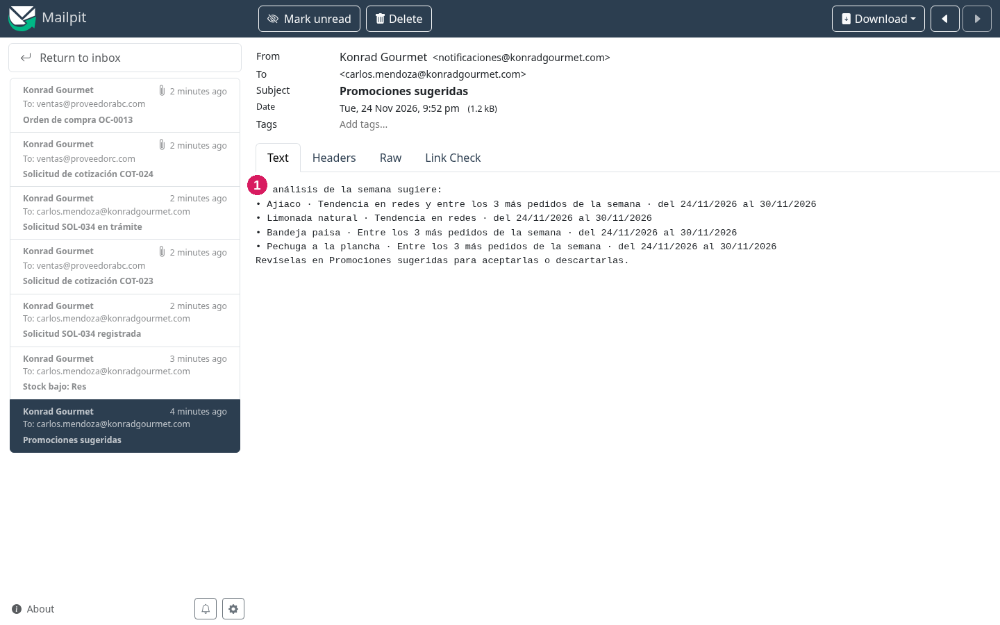
| N.º | Qué señalar |
|---|---|
El correo que sale de tendencia.detectada: una línea por plato sugerido, con su motivo (en tendencia en redes, entre los 3 más pedidos de la semana o las dos cosas) y su vigencia. |
6. Nuestro servicio SOAP · los sistemas externos que lo consumen
- Qué es
- Los «sistemas externos» que consumen los servicios del restaurante (p. 2 · n.º 11; p. 3a · n.º 16).
No se reemplazan: nuestro endpoint SOAP corre de verdad en ms-integracion (
AbastecimientoSoapEndpoint, con Apache CXF) y entra por el gateway, que pide un token válido como a cualquier petición (DEC-72). - Cómo se abre
- Desde el equipo, por
localhost:8080: es lo único de esta guía que pasa por el gateway. - Patrones
- SOA / SOAPFacade (gateway)OAuth 2.0 / JWT
401
Sin token, el gateway no deja pasar.
<?xml version='1.0' encoding='UTF-8'?><wsdl:definitions xmlns:xsd="http://www.w3.org/2001/XMLSchema" xmlns:wsdl="http://schemas.xmlsoap.org/wsdl/" xmlns:tns="http://abastecimiento.konradgourmet.com/" xmlns:soap="http://schemas.xmlsoap.org/wsdl/soap/" xmlns:ns1="http://schemas.xmlsoap.org/soap/http" name="AbastecimientoService" targetNamespace="http://abastecimiento.konradgourmet.com/">
<wsdl:types>
<xs:schema xmlns:xs="http://www.w3.org/2001/XMLSchema" xmlns:tns="http://abastecimiento.konradgourmet.com/" elementFormDefault="unqualified" targetNamespace="http://abastecimiento.konradgourmet.com/" version="1.0">
<xs:element name="consultarPrecioSugerido" type="tns:consultarPrecioSugerido"/>
<xs:element name="consultarPrecioSugeridoResponse" type="tns:consultarPrecioSugeridoResponse"/>
<xs:complexType name="consultarPrecioSugerido">
<xs:sequence>
<xs:element minOccurs="0" name="productoId" type="xs:long"/>
</xs:sequence>
</xs:complexType>
… (42 líneas más)<soap:Envelope xmlns:soap="http://schemas.xmlsoap.org/soap/envelope/"><soap:Body><ns2:consultarPrecioSugeridoResponse xmlns:ns2="http://abastecimiento.konradgourmet.com/"><precioSugerido>20000.0</precioSugerido></ns2:consultarPrecioSugeridoResponse></soap:Body></soap:Envelope>
El precio sugerido de la res. Sale del mismo Proxy: estaba en Redis, así que el Ministerio no recibió otra llamada.
7. El almacén de objetos (SeaweedFS)
- Qué es
- El almacén de objetos S3 de la página 3a y la 5 (p. 3a · n.º 11; p. 5 · n.º 18). En el equipo es SeaweedFS, que habla la misma API S3 (DEC-59).
- Quién lo usa
- ms-cotizaciones guarda el PDF de la cotización (
cotizaciones/) y ms-ordenes el de la orden (ordenes/), endocumentos-pdf; ms-menu guarda las imágenes de los platos enimagenes-platos; ms-notificaciones descarga el PDF para adjuntarlo. - Cómo se abre
- Por la aplicación: «Ver PDF» en V14 y en V23. En la terminal:
kgs3 s3 ls …. - Patrones
- Claim checkAdapter (AlmacenObjetosAdapter)Hexagonal
2026-11-23 19:55:51 documentos-pdf 2026-11-23 19:55:52 imagenes-platos
2026-11-23 19:57:59 2338 cotizaciones/COT-018.pdf 2026-11-23 19:58:00 2329 cotizaciones/COT-019.pdf 2026-11-23 19:58:00 2329 cotizaciones/COT-020.pdf 2026-11-23 19:58:01 2332 cotizaciones/COT-021.pdf 2026-11-23 19:58:37 2226 cotizaciones/COT-022.pdf 2026-11-25 02:53:30 2232 cotizaciones/COT-023.pdf 2026-11-25 02:53:33 2226 cotizaciones/COT-024.pdf 2026-11-23 19:58:05 2308 ordenes/OC-0012.pdf 2026-11-25 02:53:42 2183 ordenes/OC-0013.pdf
COT-023, COT-024 y OC-0013 son los del ensayo; los anteriores vienen con los datos de la demo.
(no imprime nada)
Vacío en la demo: los platos de la carta inicial no tienen foto (V03 muestra su ícono). El bucket se llena cuando el jefe de cocina sube la foto de un plato en V06.

documentos-pdf/cotizaciones/.documentos-pdf/ordenes/.Claim check: Kafka no transporta archivos. El evento lleva solo la dirección del PDF; quien lo necesita lo pide al
almacén. Se ve en el evento orden.generada (sección 9).
8. Elasticsearch · los logs de error
- Qué es
- Los logs de error de la página 3a (p. 3a · n.º 8; p. 5 · n.º 12): el índice
logs-errores. - Quién lo usa
- Escriben los once servicios:
AppenderElasticsearch(decompartido) manda cada error con el servicio, el mensaje, la hora, la correlación y el usuario, por lotes y sin hacer esperar al servicio. Lee solo ms-administracion (ElasticsearchLogsAdapter) para la ventana «Logs de errores» del administrador. - Cómo se abre
- Por la aplicación: «Logs de errores». En la terminal:
kg exec elasticsearch curl ….
health status index uuid pri rep docs.count docs.deleted store.size pri.store.size dataset.size
Con la demo recién hecha no hay índice: ningún servicio ha fallado. El índice se crea con el primer error.
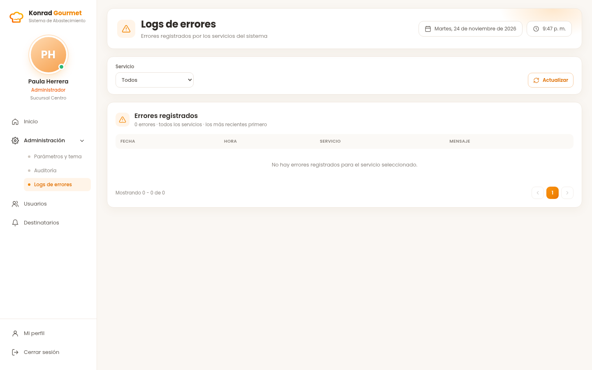
Para ver un error de verdad, el paso opcional de la sección 13 detiene el correo un momento: el error aparece aquí con su servicio, su mensaje y la correlación del recorrido.
9. Kafka · el broker de eventos
- Qué es
- El broker de eventos (p. 3a · n.º 15): los 10 tópicos y la cola de errores de ms-notificaciones, con la creación automática de tópicos apagada.
- Cómo se abre
kg exec kafka /opt/kafka/bin/…, con los scripts que trae la imagen.
__consumer_offsets auditoria.evento cotizacion.enviada cotizacion.validada inventario.stock-bajo menu.actualizado notificaciones.dlq orden.generada pedido.registrado solicitud.en-tramite solicitud.registrada tendencia.detectada
Los 10 tópicos de la sección 6 del reporte y notificaciones.dlq; los que empiezan por __ son internos de Kafka.
TOPIC PARTITION LAG orden.generada 1 - orden.generada 2 - orden.generada 0 0 solicitud.registrada 2 - solicitud.registrada 0 0 solicitud.registrada 1 - cotizacion.enviada 2 0 cotizacion.enviada 1 0 cotizacion.enviada 0 - tendencia.detectada 2 - inventario.stock-bajo 2 - inventario.stock-bajo 0 0 inventario.stock-bajo 1 - solicitud.en-tramite 2 - solicitud.en-tramite 1 - tendencia.detectada 1 - solicitud.en-tramite 0 0 tendencia.detectada 0 0
Tópico, partición y atraso (LAG) del grupo de ms-notificaciones: 0 es que ya procesó todo; «-», una partición que todavía no ha recibido eventos (cada tópico tiene tres).
{"usuario":"laura.gomez@konradgourmet.com","numero":"OC-0013","cotizacionNumero":"COT-023","solicitudNumeros":["SOL-034"],"proveedor":"Proveedor ABC","correoProveedor":"ventas@proveedorabc.com","pdfUrl":"s3://documentos-pdf/ordenes/OC-0013.pdf","total":8.4E+5,"id":"747d440e-4f9f-44f1-916e-f641ae6f4c09","correlacionId":"ea774b3c-080a-4f50-96e0-fdf3d9fb18d2","ocurridoEn":"2026-11-24T21:53:43.006484616"}El evento orden.generada de OC-0013 lleva pdfUrl (la dirección en el almacén), el correo de quien lo hizo y la correlación del recorrido.
10. Redis · caché, alarmas y límite de tasa
- Qué es
- p. 3a · n.º 13; p. 5 · n.º 17. Tres usos separados: la caché de precios del
Ministerio (llaves
precio-referencia:{producto}), el canalalarmas:stock-bajode las alarmas en vivo y los baldes del límite de tasa del gateway. - Cómo se abre
kg exec redis redis-cli ….
precio-referencia:1
El canal de las alarmas
Con una terminal suscrita al canal antes del cierre del día (paso 2 de la guía de la plataforma), la alarma de la res
pasa por aquí: AlarmaPushAdapter la publica y cada réplica de ms-notificaciones la entrega por WebSocket a los
jefes conectados (PD-01). Se corta con Ctrl+C.
subscribe
alarmas:stock-bajo
1
message
alarmas:stock-bajo
{"destino":"carlos.mendoza@konradgourmet.com","contenido":"Res al 22 %: realice una solicitud","fechaHora":"2026-11-24T21:53:19"}El límite de tasa
request_rate_limiter.{analitica-bam.usuario:5}.timestamp
request_rate_limiter.{solicitudes-solicitudes.usuario:2}.timestamp
request_rate_limiter.{administracion-admin.usuario:5}.timestamp
request_rate_limiter.{administracion-admin.usuario:5}.tokens
request_rate_limiter.{identidad-auth.ip:172.23.0.1}.timestamp
request_rate_limiter.{identidad-auth.ip:172.23.0.1}.tokens
request_rate_limiter.{solicitudes-solicitudes.usuario:2}.tokens
request_rate_limiter.{analitica-bam.usuario:5}.tokensUn balde por usuario con sesión (usuario:2 es el jefe de cocina) y otro por IP para el inicio de sesión. Duran unos segundos, así que hay que consultarlos justo después de usar la aplicación.
11. PostgreSQL · una base por servicio
- Qué es
- p. 5 · n.º 16: una base por servicio, cada una con su usuario, que no puede entrar a las demás.
- Cómo se abre
kg exec postgres psql -U postgres ….
ms_administracion ms_analitica ms_cotizaciones ms_identidad ms_integracion ms_inventario ms_menu ms_notificaciones ms_ordenes ms_pedidos ms_solicitudes
numero | cotizacion_numero | proveedor | pdf_url | estado ---------+-------------------+---------------+-----------------------------------------+------------ OC-0012 | COT-018 | Proveedor ABC | s3://documentos-pdf/ordenes/OC-0012.pdf | EN_PROCESO OC-0013 | COT-023 | Proveedor ABC | s3://documentos-pdf/ordenes/OC-0013.pdf | FINALIZADA (2 rows)
OC-0013 sobre COT-023, con la dirección de su PDF; FINALIZADA porque el ensayo la marcó como recibida.
0
La outbox de ms-ordenes está vacía: el relé ya publicó y borró todos sus eventos.
psql: error: connection to server on socket "/var/run/postgresql/.s.PGSQL.5432" failed: FATAL: permission denied for database "ms_ordenes" DETAIL: User does not have CONNECT privilege.
El usuario de ms-pedidos no puede conectarse a la base de ms-ordenes: los servicios se hablan por REST o por eventos, nunca por la base del otro.
12. Eureka y la página de servicios activos
Las dos consolas publicadas que no son correo: localhost:8761 (Eureka, p. 3a · n.º 7; p. 5 · n.º 8)
y localhost:8080/plataforma/, una página que muestra los once servicios activos en Eureka con su prefijo en el gateway.
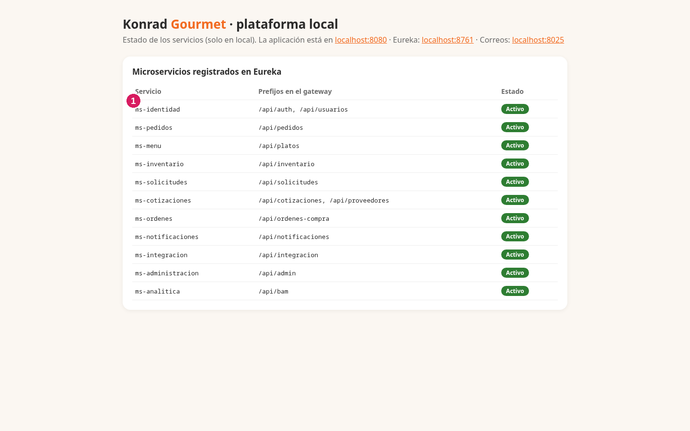
| N.º | Qué señalar |
|---|---|
| Los 11 servicios, activos, con su prefijo en el gateway. |
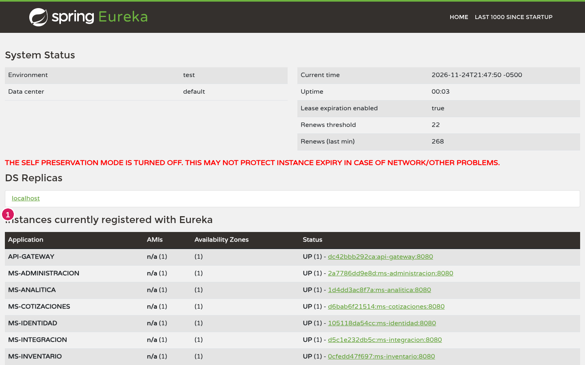
| N.º | Qué señalar |
|---|---|
| Las instancias registradas: el gateway y los once servicios. |
Si al empezar un clic responde 503, es que Eureka todavía no propagó: abrir /plataforma/ y esperar a que
estén los once.
13. Paso opcional: un error de verdad
pause, no stop: Mailpit guarda los correos en
un archivo temporal que borra al detenerse, así que con stop la bandeja queda vacía. Con pause el contenedor se congela y conserva todo.- Pausar el correo.$ kg pause correo
(no imprime nada)
- El jefe de cocina registra una solicitud en «Solicitudes» → «Nueva solicitud» (en el ensayo,
SOL-035: 5 kg de arroz). ms-notificaciones intenta el correo: el servidor no contesta, lo reintenta 2 veces cada 2 s y lo pasa a la cola de errores. En el ensayo tardó unos 21 s. - El error en Elasticsearch, con su correlación:$ kg exec elasticsearch curl -s 'localhost:9200/logs-errores/_search?pretty&size=1&sort=fechaHora:desc&filter_path=hits.hits._source&_source_excludes=traza,hilo,logger'
{ "hits" : { "hits" : [ { "_source" : { "servicio" : "ms-notificaciones", "nivel" : "ERROR", "mensaje" : "No se pudo notificar un evento de solicitud.registrada después de 3 intentos; pasa a la cola de errores notificaciones.dlq · java.net.SocketTimeoutException: Read timed out", "fechaHora" : "2026-11-24T21:56:12.815056993-05:00", "correlacionId" : "bce48c28-89eb-47d0-8bf3-c80bedd2cd3e" } } ] } }$ kg exec elasticsearch curl -s 'localhost:9200/_cat/indices?v'health status index uuid pri rep docs.count docs.deleted store.size pri.store.size dataset.size green open logs-errores hBLue5iaSJC3FWZB8OO3kw 1 0 1 0 10.8kb 10.8kb 10.8kb
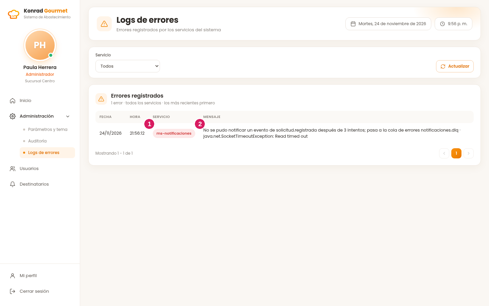
N.º Qué señalar El servicio que falló: ms-notificaciones. El mensaje: qué evento no se pudo notificar, después de cuántos intentos, que pasó a la cola de errores y por qué (el servidor no respondió). $ kg exec kafka /opt/kafka/bin/kafka-get-offsets.sh --bootstrap-server localhost:9092 --topic notificaciones.dlqnotificaciones.dlq:0:0 notificaciones.dlq:1:1 notificaciones.dlq:2:0
La cola de errores tiene un evento más (0 → 1).
- Reanudar el correo.$ kg unpause correo
(no imprime nada)
ReprocesoColaErroresvuelve a procesar la cola cada 30 s en el equipo (5 min por defecto); en el ensayo el correo llegó a los 23 s.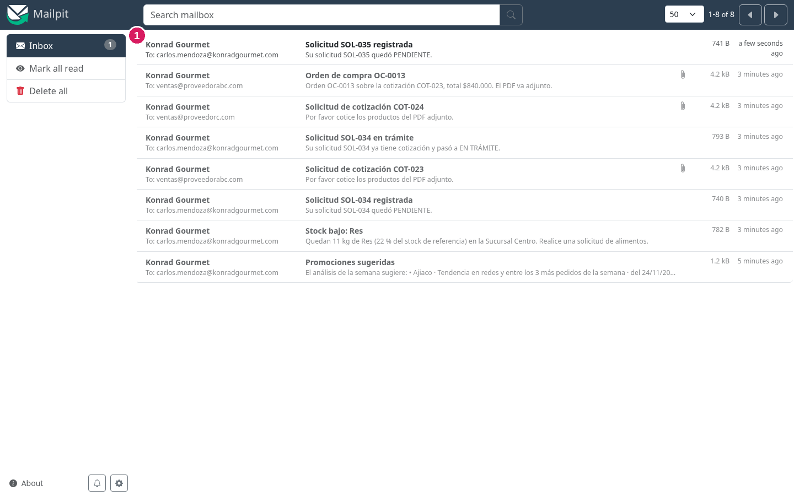
N.º Qué señalar «Solicitud SOL-035 registrada»: llegó una sola vez, sin repetir los anteriores.
14. Guion sugerido
≈ 8 min (≈ 6½ sin el paso opcional). En primera persona del plural; cada bloque se lee en voz alta mientras se muestra lo de su sección.
Introducción · 30 s
«Además de la aplicación, podemos mostrar lo que la rodea. En el diagrama de contexto el sistema habla con cuatro sistemas externos: el Ministerio de Comercio, el servidor de correo certificado, las redes sociales y los sistemas que consumen nuestro servicio SOAP. En el entorno local cada uno tiene su equivalente con el mismo contrato: Mailpit recibe los correos y dos servicios WireMock responden como el Ministerio y como la API de tendencias. Así vemos qué sale del sistema y qué le responden.»
El correo certificado · 1½ min
«Esta es la bandeja del servidor de correo. Cada correo sale de un evento: la alerta de stock bajo, la solicitud registrada y en trámite, las dos cotizaciones con su PDF y la orden OC-0013. Si abrimos las cabeceras de la cotización COT-023 vemos dos que pone el sistema: X-Certificado, la huella SHA-256 del destinatario y el contenido, y X-Sello-Tiempo, la hora de envío. Las ponen dos decoradores apilados sobre el adaptador SMTP, que no sabe que existen. El PDF adjunto no viajó por Kafka: el evento llevaba su dirección y ms-notificaciones lo descargó del almacén.»
El Ministerio y la caché · 1½ min
«El precio estándar lo da el servicio SOAP del Ministerio, y solo ms-integracion habla con él. En la demo generamos dos cotizaciones de res, COT-023 y COT-024, pero el Ministerio recibió una sola llamada: la segunda la respondió el Proxy desde Redis, donde el precio vale un día. Si el Ministerio no responde, la cotización queda pendiente de precio y se reenvía cuando vuelve.»
Las redes sociales · 1 min
«ms-analitica consulta cada semana la API de tendencias con su token; sin token responde 401. Aquí lo corre cada 30 segundos, y la cuenta de llamadas sube sola. Cuando un plato de la carta está en tendencia, publica un evento y el jefe de cocina recibe el correo de promociones sugeridas.»
Los datos detrás · 1½ min
«El PDF de la orden está en el almacén de objetos, en el bucket documentos-pdf. En Kafka están los diez tópicos y la cola de errores, y el evento orden.generada de OC-0013 lleva solo la dirección del PDF. Cada servicio tiene su base: el usuario de pedidos no puede entrar a la base de órdenes. Y nuestro propio servicio SOAP responde por el gateway, con token, el mismo precio que ya estaba en la caché.»
Opcional: el error real · 1½ min
«Pausamos el servidor de correo y el jefe de cocina registra una solicitud. La solicitud queda registrada igual; el correo se reintenta, pasa a la cola de errores y el error aparece en «Logs de errores» con el servicio y la correlación. Reanudamos el correo y, sin hacer nada más, la cola lo vuelve a procesar y el correo llega.»
Cierre · 30 s
«Por último, Eureka: los once servicios y el gateway registrados. El gateway solo enruta a instancias vivas, y si una réplica se cae, deja de aparecer aquí.»
15. Preguntas probables
- ¿Por qué no se conectan al Ministerio de verdad?
- El servicio del Ministerio no está disponible para el proyecto. WireMock responde con el mismo WSDL que sigue MinisterioSoapClient; conectarse al real es cambiar la variable MINISTERIO_URL, sin tocar el adaptador.
- ¿Qué cambia en producción para cada sistema externo?
- Solo la configuración: MINISTERIO_URL, el servidor SMTP (con TLS) en SMTP_HOST, REDES_URL y REDES_TOKEN, y S3_URL para el almacén. Los puertos de la arquitectura hexagonal no cambian; por eso se pudieron reemplazar en el entorno local.
- ¿Qué garantiza el certificado del correo?
- Que el contenido y el destinatario no cambiaron: la cabecera lleva la huella SHA-256 de los dos. Se publican los primeros 8 bytes porque bastan para comparar en la cabecera. El sello de tiempo dice cuándo salió, con zona horaria.
- ¿Por qué decoradores y no un método que lo haga todo?
- Cada garantía es una responsabilidad separada que se apila sobre el envío; agregar una (una firma, un acuse) es agregar un decorador, sin tocar el adaptador SMTP ni los demás.
- ¿Cuánto dura la caché de precios y quién la comparte?
- Un día (supuesto S3). Vive en Redis, así que la comparten todas las réplicas de ms-integracion; la llave vence sola.
- ¿Qué pasa si el correo falla?
- Se reintenta dos veces, el error queda en Elasticsearch con su correlación, el evento pasa a notificaciones.dlq y ReprocesoColaErrores lo vuelve a procesar más tarde. La operación del usuario no se pierde ni se bloquea.
- ¿Por qué el PDF no va dentro del evento?
- Es el patrón claim check: Kafka está hecho para mensajes pequeños; el archivo va al almacén de objetos y el evento lleva su dirección. Así el PDF se guarda una vez, crece por separado (requisito del 200 %) y se respalda con el almacén.
- ¿Quién puede ver Elasticsearch, Kafka o las bases?
- Ningún usuario directamente: no se publican fuera de la red. Los logs los ve el administrador en su ventana, a través de ms-administracion; cada base solo la abre su servicio.
- ¿Cómo se protege la API de redes y nuestro SOAP?
- La API de redes pide un token Bearer (sin él responde 401) e irá por HTTPS. Nuestro SOAP entra por el gateway, que valida el JWT; los sistemas externos lo obtienen con OAuth 2.0 client credentials.
- ¿Por qué SeaweedFS y no MinIO?
- La imagen de MinIO ya no se puede descargar y los dos hablan la misma API S3, así que el adaptador no cambia (DEC-59). En producción es un almacén de objetos administrado, versionado y multizona.
- ¿Cada cuánto se buscan tendencias?
- Cada semana, el lunes a las 6:00, con ShedLock para que corra en una sola réplica; en el entorno local cada 30 segundos para poder verlo. Se publica a lo sumo un evento por día.
16. Antes de entrar
- kg-demo restablecida y encendida:
documentos/guias_sustentacion/fuente/restablecer_demo.shyCOMPOSE_PROJECT_NAME=kg-demo KonradGourmet/plataforma/levantar.sh --sin-compilar; esperar ~75 s. El restablecimiento también vacía Redis y el volumen de Kafka: la primera cotización le pregunta al Ministerio y los tópicos solo tienen los eventos de esta demo. - Hecha la demo de la guía de la plataforma (sin ella no están
SOL-034,COT-023,OC-0013ni los correos). - Una terminal en
FinalProyecto/con los atajoskgykgs3pegados, y la letra grande. - Pestañas abiertas:
localhost:8025(Mailpit),localhost:8761(Eureka) ylocalhost:8080/plataforma/. - Si se va a mostrar el canal de alarmas: una segunda terminal con
kg exec redis redis-cli SUBSCRIBE alarmas:stock-bajoabierta antes del cierre del día. - Contar las llamadas al Ministerio antes de probarlo con
curl. - El paso del error, si se hace, al final y con
pause. - Al terminar:
restablecer_demo.sh, que detienekg-demo(constop) y la deja restablecida para el siguiente ensayo.
Konrad Gourmet · Sistema de Abastecimiento · Arquitectura de Software, Fundación Universitaria Konrad Lorenz, 2026-2